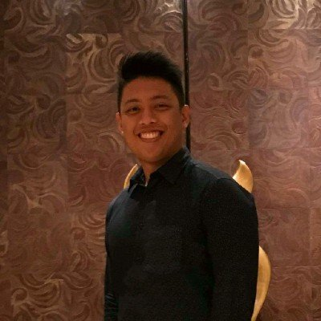

Open to new opportunitiesPatrik Santiago
Full-stack engineer building ETL and data pipelines
I build the backend systems money and data move through: secure APIs, finance and ERP integrations, and the pipelines that turn scattered records into numbers people can trust. 5+ years at IBM, Infor and Accenture. SAIT Software Development graduate and founder of Jurgen Software Solutions.
Core Competencies
Secure, reliable backends
REST, SOAP and GraphQL services in C#/.NET and Java Spring Boot, built with authentication, authorization, encryption and JWT/OAuth from the start.
Financial and enterprise integration
Connecting ERP, finance, CRM and reporting systems so data flows without manual work, using Apache Camel, Kafka, RabbitMQ and SFTP.
ETL and data you can trust
Pipelines with SSIS, AWS Glue, Oracle Data Integrator, Python and PowerShell that validate, transform and load data into warehouses and Power BI.
Keeping production healthy
Incident investigation with Splunk and OpenShift logs, root-cause fixes, CI/CD with Jenkins and Docker, and reliable rollbacks.
Hard Skills
Click a skill to highlight where I've used it.
Soft Skills
I work closely with business stakeholders, architects and QA, from requirements through SIT/UAT to release, and I like explaining technical trade-offs in plain language.
Experience
Select a role to see more.
-
- Built and supported Java Spring Boot microservices connecting client apps, databases and downstream enterprise systems.
- Resolved production incidents using OpenShift logs and Splunk dashboards to find root causes and restore service.
- Applied authentication, authorization and encryption; validated AI-generated code against enterprise security standards.
- Automated report generation with Python and built Power BI reporting on Tenable data for clients and management.
-
- Built REST APIs and backend services in C# and Java for ERP integrations and finance tools, using Apache Camel and Hibernate.
- Developed React dashboards for EPM datasets and business modeling apps in C# and React.
- Created ETL pipelines with SSIS, PowerShell and Python moving S3 data into cloud warehouses; used AWS Glue.
- Built JWT-authenticated services; automated deployments with Jenkins, Docker and Bitbucket pipelines.
- Refactored legacy code with Factory and Singleton patterns and replaced servlets with REST controllers.
-
- Developed Oracle Sales Cloud integrations with Java, Groovy, SOAP and REST for business and compliance needs.
- Designed ETL and database automation with Oracle Data Integrator and Azure pipelines.
- Automated testing workflows with J2EE, reducing errors by 45%; improved data integrity by 60% with Groovy scripting.
-
- Built report generation and email scheduling tools; modernized legacy C++ reporting with .NET.
- Created data transformation routines that cut manual reporting time by 40%.
Education & Certifications
Diploma, Software Development
Southern Alberta Institute of Technology (SAIT), 2025
B.S. Computer Engineering
Adamson University, 2018
Let's talk
Hiring for backend, integration or data roles? I'd like to hear from you.
patrikjurgen.santiago@gmail.com
Message on LinkedIn